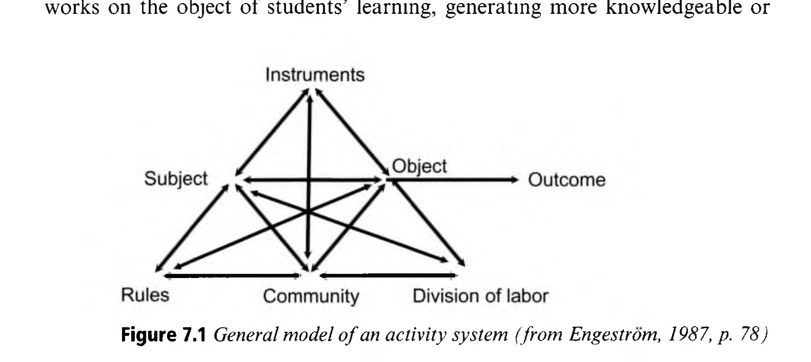
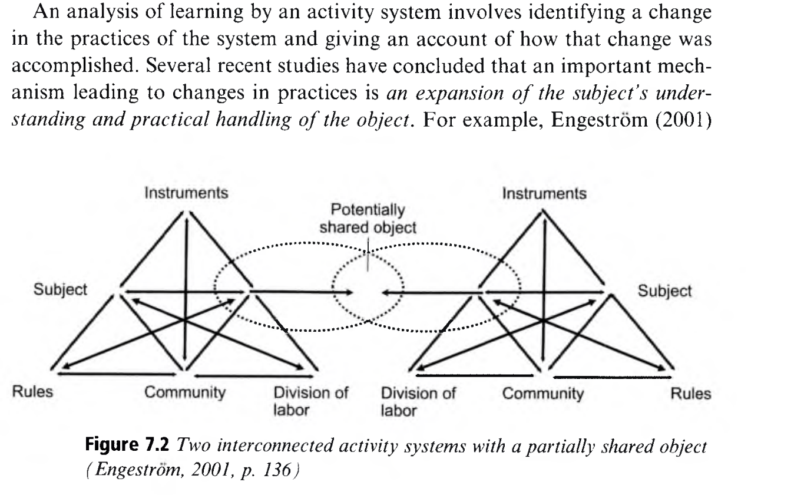
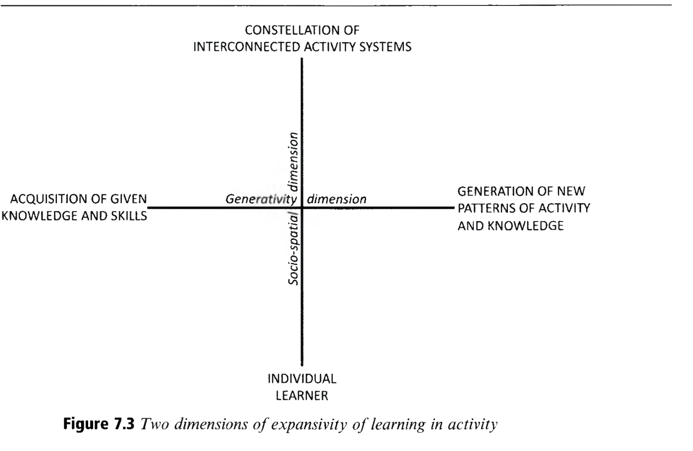
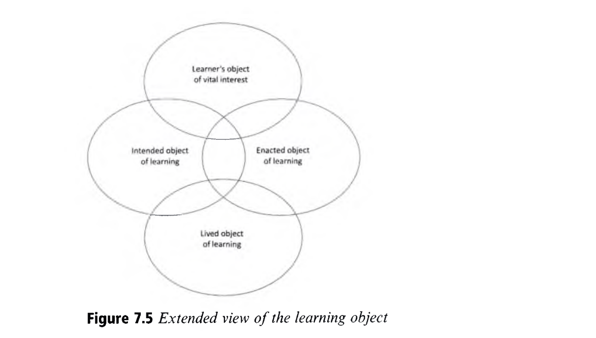
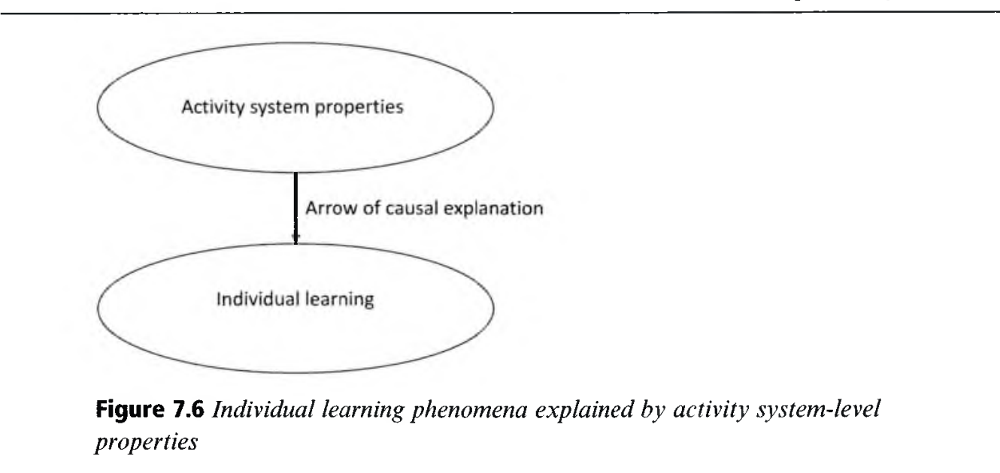
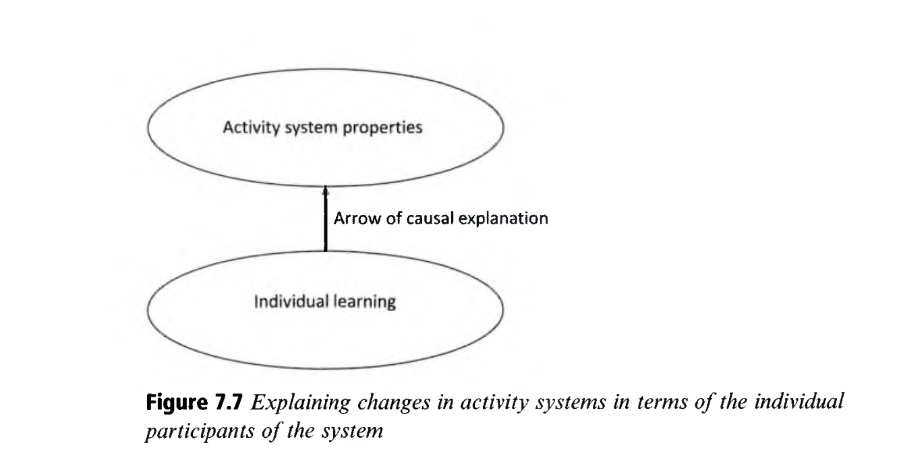
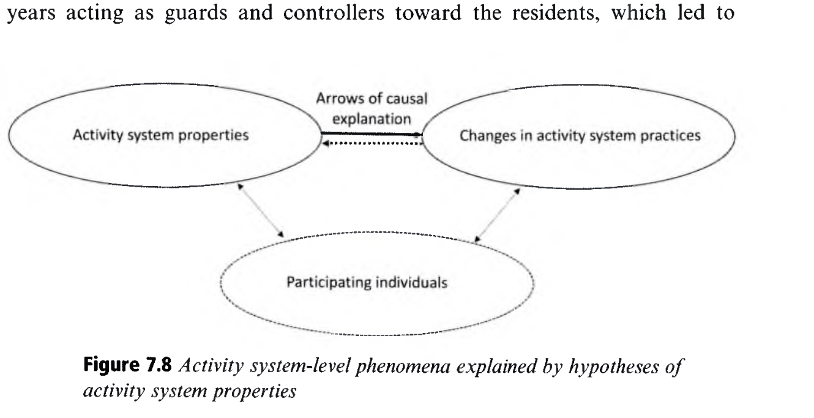

Learning in Activity
활동 이론과 학습: 활동 시스템 삼각형, 확장 학습(Expansive Learning), 그리고 역사적 모순
👥 저자 및 출처
Yrjö Engeström (University of Helsinki)
『The Cambridge Handbook of the Learning Sciences』 (3rd Ed., 2022, pp. 135–156)
🎯 챕터 핵심 아젠다
- 활동 시스템 삼각형 (Figure 7.1): 주체-도구-대상-규칙-공동체-분업
- 경계 횡단 (Figure 7.2): 이질적 시스템 간의 공유된 대상 창출
- 확장 학습 (Figure 7.3): "아직 존재하지 않는 것을 창조하며 배우기"
- 4단계 모순과 변혁적 주체성: 이중 자극(Double Stimulation)
🎯 강의 목표 및 핵심 맥락 (Context & Goal)
본 장은 인간의 학습을 뇌 속의 고립된 정보 처리가 아닌, 도구로 매개되고 사회적으로 분업화된 집단적 '활동 시스템(Activity System)'의 진화로 규명하는 문화역사적 활동이론(CHAT)의 핵심 프레임워크를 정립합니다.
📖 원문 심층 학술 해설 (Detailed Academic Commentary)
위리외 엔게스트롬(Yrjö Engeström)은 핀란드 헬싱키 대학의 석학으로, 3세대 활동이론과 확장 학습(Expansive Learning), 변화실험실(Change Laboratory) 방법론을 창시하여 전 세계 학습과학과 조직 혁신 분야에 지대한 영향을 미쳤습니다.
💡 수업/세미나 진행 팁 & 질문 가이드
"우리가 학교에서 겪는 수많은 갈등(예: 시험 성적과 참된 배움의 충돌)은 왜 개인의 탓이 아니라 시스템의 모순일까요?"라는 질문으로 시작하세요.
문화역사적 활동이론(CHAT)의 3세대 진화
비고츠키의 도구 매개에서 레온티예프의 활동 위계, 그리고 엔게스트롬의 삼각형으로
제1세대: Vygotsky
도구와 기호의 매개 (Mediation): 인간의 인지는 자극-반응이 아닌 문화적 인공물(Artifacts)로 매개됨
제2세대: Leont'ev
활동-행동-조작의 3층 위계: 개인의 목표 지향적 '행동(Action)'과 집단적 동기의 '활동(Activity)' 구분
제3세대: Engeström
활동 시스템 삼각형 & 경계 횡단: 규칙, 공동체, 분업을 통합하고 다중 시스템 간의 확장 학습 정립
🎯 강의 목표 및 핵심 맥락
CHAT의 3세대 진화 과정을 조망하고, 엔게스트롬의 3세대 활동이론이 집단적·제도적 맥락을 어떻게 통합했는지 설명합니다.
📖 원문 심층 학술 해설
레온티예프(Leont'ev, 1978)는 '원시 수렵' 비유를 통해, 몰이꾼(개인 행동)은 사냥감을 쫓아버리지만 전체 부족(집단 활동)의 식량 획득 동기 속에서만 그 행동이 의미를 갖는다는 활동의 사회적 분업을 밝혔습니다.
💡 수업/세미나 진행 팁 & 질문 가이드
교실에서 학생의 '노트 필기 행동'이 전체 학교 '교육 활동' 속에서 어떤 의미를 갖는지 연결해 보세요.
엔게스트롬의 활동 시스템 삼각형 (Figure 7.1)
주체, 도구, 대상, 규칙, 공동체, 분업의 6대 요소가 결합된 거시적 실천 구조
📐 활동 시스템 6대 구성 요소
- 주체 (Subject): 분석의 초점이 되는 개인/집단 (교사, 학생)
- 도구 (Artifacts): 활동을 매개하는 개념적·물질적 인공물
- 대상 (Object): 활동이 변혁하고자 하는 문제 공간/목표
- 규칙 (Rules): 공동체의 규범, 시험 기준, 시간표
- 공동체 (Community): 대상을 공유하는 이해관계자들
- 분업 (Division of Labor): 권력과 과제의 사회적 배분

🎯 강의 목표 및 핵심 맥락
원서 Figure 7.1을 통해 엔게스트롬의 활동 시스템 삼각형 모델의 6대 구성 요소와 상호작용 관계를 규명합니다.
📖 원문 심층 학술 해설
상단 삼각형(주체-도구-대상)은 비고츠키의 고전적 매개 관계이며, 하단 삼각형(규칙-공동체-분업)은 개인이 속한 사회적·제도적 구조를 나타냅니다. 활동은 이 전체 시스템의 역동적 상호작용입니다.
💡 수업/세미나 진행 팁 & 질문 가이드
우리 학교의 '수업 활동'을 이 6개 꼭짓점에 대입하여 각각 무엇이 해당하는지 매핑해 보세요.
교실 수업 활동 시스템의 6대 꼭짓점 분석
활동 시스템 렌즈로 바라본 학교 교육 현장의 실제 구조
👤 주체 (Subject)
탐구에 참여하는 학생 모둠 및 수업을 이끄는 교사
💻 매개 도구 (Tools)
태블릿, 코딩 IDE, 시뮬레이션(NetLogo), CER 프롬프트 카드
🎯 대상 (Object)
실세계 환경 오염 문제 해결 및 과학적 개념 멘탈 모델 구성
📜 규칙 (Rules)
수업 시간 50분 제약, 협력 대화 규범, 지필고사 평가 기준
👥 공동체 (Community)
학급 전체 급우, 동료 교사, 학부모, 지역사회 환경 전문가
⚖️ 분업 (Division)
모둠 내 역할 분담(드라이버/내비게이터), 교사의 퍼실리테이션
🎯 강의 목표 및 핵심 맥락
활동 시스템 삼각형의 6대 구성 요소를 실제 학교 과학/SW 수업의 구체적 사례로 전환하여 이해를 돕습니다.
📖 원문 심층 학술 해설
수업의 성패는 도구(소프트웨어) 하나만으로 결정되지 않습니다. 규칙(평가 제도)과 분업(교사-학생 권력 구조)이 도구와 조화를 이루어야만 진정한 학습 혁신이 일어납니다.
💡 수업/세미나 진행 팁 & 질문 가이드
새로운 에듀테크 도구를 교실에 도입했을 때 기존의 '규칙'이나 '분업'과 충돌했던 경험을 나누어 보세요.
상호 연결된 활동 시스템들과 공유된 대상 (Figure 7.2)
학교 활동 시스템과 지역사회/전문가 시스템이 만나 창출하는 혁신
🌐 다중 시스템 간의 상호작용
- 시스템 1 (좌측): 학교 교실 활동 (교사-학생)
- 시스템 2 (우측): 지역사회 병원/연구소 활동 (의사-전문가)
- 객체 1 ➔ 객체 2 ➔ 객체 3: 두 시스템이 협력하여 부분적으로 공유된 공동의 대상(Partially Shared Object 3)을 창조
- ➔ 폐쇄적 교실을 넘어선 실세계 지식 창출

🎯 강의 목표 및 핵심 맥락
원서 Figure 7.2를 통해 3세대 활동이론의 핵심인 다중 활동 시스템 간의 결합과 '공유된 대상(Shared Object)' 창출 과정을 설명합니다.
📖 원문 심층 학술 해설
엔게스트롬(Engeström, 2001)은 어린이 병원과 학교, 가정이 결합하여 만성 질환 아동을 치료하는 사례를 통해, 단일 시스템의 한계를 넘어서는 다학제적 협력 생태계를 실증했습니다.
💡 수업/세미나 진행 팁 & 질문 가이드
학교와 마을 공동체, 지역 IT 기업이 결합하는 '경계 횡단 프로젝트'의 가능성을 논의하세요.
경계 횡단(Boundary Crossing)과 매듭 묶기(Knotworking)
고정된 위계를 허물고 유동적으로 결합하여 복합 난제를 해결한다
🌉 경계 횡단 (Boundary Crossing)
- 서로 다른 전문 분야와 문화를 가진 시스템의 경계를 넘나듦
- 경계 인공물(Boundary Objects)을 통해 이질적 언어 소통
- 새로운 하이브리드 실천과 융합 지식 창조
🪢 매듭 묶기 (Knotworking)
- 고정된 상설 조직이나 중앙 지휘본부 없이 작동
- 필요에 따라 다양한 전문가들이 즉각적으로 결합(매듭 묶기)
- 과제 해결 후 자연스럽게 해체되는 유연한 분산 협업
🎯 강의 목표 및 핵심 맥락
현대 사회의 복합 문제 해결 양식인 '경계 횡단(Boundary Crossing)'과 '매듭 묶기(Knotworking)'의 개념을 정립합니다.
📖 원문 심층 학술 해설
기후 위기나 감염병 방역처럼 거대한 문제는 단일 관료 조직으로 풀 수 없습니다. 다양한 행위자들이 느슨하지만 강력하게 연결되는 '매듭 묶기' 협업이 21세기 핵심 학습 역량입니다.
💡 수업/세미나 진행 팁 & 질문 가이드
오픈소스 개발 생태계(GitHub)가 어떻게 대표적인 '매듭 묶기(Knotworking)' 실천인지 설명해 보세요.
확장 학습(Expansive Learning): 아직 존재하지 않는 것을 배우기
"Learning What Is Not Yet There" — 모순을 극복하는 집단적 실천의 창조
🚫 전통적 학습관 (수동적 내면화)
- 교사나 교과서에 이미 존재하는 표준 정답을 암기
- 기존 사회 질서와 직무 매뉴얼의 수동적 복제
- 새로운 문제 상황에 대처할 창의적 역량 결여
💡 활동이론의 확장 학습 (Expansive)
- 시스템 내부의 구조적 모순을 학습자가 주체적으로 진단
- 세상에 아직 존재하지 않는 새로운 도구와 규칙을 공동 창조
- 학습자 스스로 활동 시스템 전체를 질적으로 도약시킴 (Engeström, 2016)
🎯 강의 목표 및 핵심 맥락
엔게스트롬의 '확장 학습(Expansive Learning)'의 정의와 전통적 지식 습득 모델 간의 패러다임 차이를 밝힙니다.
📖 원문 심층 학술 해설
확장 학습에서 학습자는 가르침을 받는 수동적 존재가 아닙니다. 현장의 모순을 비판적으로 질문하고, 새로운 미래 실천 모델을 직접 설계하는 혁신가이자 연구자입니다.
💡 수업/세미나 진행 팁 & 질문 가이드
"정답이 없는 실세계 문제(예: 인공지능 윤리)"를 학습할 때 확장 학습이 왜 필수적인지 토론하세요.
확장 학습의 2대 확장 차원 (Figure 7.3)
사회-공간적 차원(Socio-spatial)과 생성성/도구적 차원(Generativity)
📈 2대 차원의 동시적 확장
- 사회-공간적 차원 (X축): 고립된 개인 ➔ 학급 ➔ 학교 전체 ➔ 지역사회 ➔ 글로벌 연대로 실천 공동체의 지평 확대
- 생성성/도구적 차원 (Y축): 주어진 지식의 단순 적용 ➔ 시스템 모순을 돌파하는 혁신적 개념 도구와 미래 모델 창출
- ➔ 우상향으로 나아갈 때 최대의 확장 학습 효능감 발휘

🎯 강의 목표 및 핵심 맥락
원서 Figure 7.3을 통해 확장 학습이 사회-공간적 지평의 확장과 지적 생성성의 도약이라는 2대 축으로 전개됨을 설명합니다.
📖 원문 심층 학술 해설
공동체의 범위만 넓어지고 도구적 혁신이 없으면 공허한 확장이 되며, 도구만 새롭고 사회적 연결이 없으면 고립된 혁신에 그칩니다. 두 차원이 함께 우상향해야 합니다.
💡 수업/세미나 진행 팁 & 질문 가이드
학생들의 프로젝트가 교실 안에서 끝나는 것과 지역사회로 확장되는 것의 학습 효과 차이를 분석하세요.
학습 대상(Object)의 다층적 진화와 확장 뷰
마르톤의 3대 대상 모델에서 역사적·사회적 모순을 품은 확장된 대상으로
🔄 대상의 역사적 심화
- Figure 7.4 (Marton): 의도된 대상(Intended) ➔ 실행된 대상(Enacted) ➔ 살아있는 경험적 대상(Lived)
- Figure 7.5 (Engeström 확장 뷰): 교실의 협력적 담화와 사회적 모순이 결합되어 학습 대상 자체가 집단적으로 재정의되고 진화함

🎯 강의 목표 및 핵심 맥락
원서 Figure 7.4와 Figure 7.5를 대조하여 학습 대상(Object)이 고정된 교과 목표가 아니라 공동체에 의해 끊임없이 재구성되는 역동적 실체임을 설명합니다.
📖 원문 심층 학술 해설
학생들은 수업을 받으면서 교사가 처음에 의도했던 목표(Intended Object)를 넘어서, 자신들의 삶과 직결된 새로운 문제 의식을 스스로 부여하며 대상(Object)을 확장합니다.
💡 수업/세미나 진행 팁 & 질문 가이드
수업 중 학생들이 교사의 원래 의도보다 훨씬 더 깊고 흥미로운 질문으로 과제의 대상을 바꾸어 놓았던 경험을 나누세요.
확장 학습의 7단계 순환 주기 (Learning Actions)
의문 제기에서 역사적 분석, 새 모델 설계, 현장 실행 및 정착까지 (Engeström)
1. 의문 제기
Questioning: 기존 관행의 문제점 비판 및 거부
2. 역사적 분석
Historical: 모순이 왜 생겨났는지 기원 추적
3. 경험적 분석
Empirical: 현장의 실제 일상 데이터 분석
4. 새 모델 설계
Modeling: 모순을 해결할 새 시스템 모델 구축
5. 새 모델 검토
Examining: 모의 시연 및 한계점 테스트
6. 현장 실행
Implementing: 실제 교실/일터에 적용 및 확산
7. 성찰 및 정착 (Consolidating)
새로운 실천 모델을 일상적 문화 규범으로 완전히 제도화
🎯 강의 목표 및 핵심 맥락
엔게스트롬의 확장 학습 7단계 순환 주기(Learning Actions)의 세부 메커니즘을 정립합니다.
📖 원문 심층 학술 해설
이 7단계 주기는 개인의 학습 순서가 아니라, 학교나 병원 같은 전체 조직과 집단이 기존의 위기를 극복하고 완전히 새로운 수준의 실천으로 도약하는 거시적 발전 주기입니다.
💡 수업/세미나 진행 팁 & 질문 가이드
학교의 수업 혁신 프로젝트를 이 7단계 주기에 맞추어 기획해 보세요.
형성적 개입과 변화실험실 (Change Laboratory)
현장 실천가들이 스스로 모순을 분석하고 미래를 공동 설계하는 방법론 (Virkkunen)
🪞 거울 데이터 (Mirror Data)
- 현장의 혼란, 갈등, 환자/학생의 불만 비디오 녹화물
- 실천가들에게 자신들의 모순된 현실을 직면하게 하는 '거울'
- 변혁적 주체성을 촉발하는 결정적 제1자극으로 작용
🔬 변화실험실 (Change Lab) 공간
- 3개 벽면 구조: [과거 거울] ➔ [현재 모델/모순] ➔ [미래 비전]
- 교사와 연구자가 동등한 파트너로 참여하여 새 도구 공동 창작
- 외부 지시가 아닌 내생적 혁신(Endogenous Innovation) 추동
🎯 강의 목표 및 핵심 맥락
활동이론의 대표적 개입 연구 방법론인 '변화실험실(Change Laboratory)'의 구조와 작동 원리를 소개합니다.
📖 원문 심층 학술 해설
비르쿠넨과 뉴넘(Virkkunen & Newnham, 2013)은 변화실험실이 전통적 하향식 개혁의 실패를 극복하고, 현장 교사들이 자발적으로 시스템을 리모델링하게 만드는 강력한 도구임을 입증했습니다.
💡 수업/세미나 진행 팁 & 질문 가이드
우리 학교의 교원학습공동체에 '변화실험실' 3개 벽면 모델을 도입하는 방안을 토론하세요.
활동 시스템 수준의 3대 설명 패턴 (Patterns of Explanation)
개인과 시스템의 상호작용 및 역사적 발전을 설명하는 인과 모델
패턴 1 (Figure 7.6)
시스템 ➔ 개인 학습: 규칙, 공동체, 분업 구조가 개인의 미시적 학습 행동을 매개
패턴 2 (Figure 7.7)
개인 행동 ➔ 시스템 변화: 개인의 변혁적 주체성과 일탈이 시스템 전체를 재구조화
패턴 3 (Figure 7.8)
내부 모순 ➔ 역사적 발전: 4단계 시스템 모순이 심화·해결되며 시스템의 질적 도약
🎯 강의 목표 및 핵심 맥락
엔게스트롬이 제시한 활동이론의 3대 인과 설명 패턴(Figure 7.6, 7.7, 7.8)을 총괄 비교합니다.
📖 원문 심층 학술 해설
활동이론은 개인주의적 환원론(개인 탓)도, 구조결정론(시스템 탓)도 거부합니다. 개인과 시스템이 모순과 주체성을 매개로 끊임없이 서로를 재창조하는 변증법적 상호작용을 설명합니다.
💡 수업/세미나 진행 팁 & 질문 가이드
다음 3개 슬라이드에서 각 패턴의 세부 메커니즘을 하나씩 깊이 있게 살펴봅니다.
패턴 1: 시스템 구조로 개인 학습 설명 (Figure 7.6)
학생의 참여와 소외는 교실의 규칙, 공동체, 분업 구조의 산물이다
🏛️ 시스템 수준 매개 메커니즘
- 학생 개인의 학습 동기나 태도는 고립된 특성이 아님
- 교실의 담화 규칙(Rules)과 모둠 내 권력 분업(Division of Labor)이 학생의 발언 기회를 제약하거나 촉진
- 시스템 하단 구조를 개혁하지 않고 개인만 탓하는 교육의 오류 극복

🎯 강의 목표 및 핵심 맥락
원서 Figure 7.6을 통해 시스템의 규칙과 분업이 개인 학습자의 인지적 참여를 어떻게 매개하는지 설명합니다.
📖 원문 심층 학술 해설
모둠 활동에서 침묵하는 학생은 '소극적 성격' 때문이 아니라, 모둠의 분업 구조가 우수 학생 1명에게 독점되어 있거나 실패를 비난하는 교실 규칙 때문일 수 있습니다.
💡 수업/세미나 진행 팁 & 질문 가이드
수업에서 소외되는 학생을 돕기 위해 '시스템의 규칙과 분업'을 어떻게 재설계해야 할지 토론하세요.
패턴 2: 개인의 주체적 행동이 시스템을 바꾼다 (Figure 7.7)
기존 규칙에 대한 일탈 행동(Deviating Action)과 변혁적 주체성
⚡ 상향식 시스템 변혁의 메커니즘
- 모순된 상황에서 학습자가 기존 규칙을 그대로 따르기를 거부
- 새로운 문제 해결 방식(일탈 행동)을 주체적으로 시도
- 이 행동이 공동체의 지지를 얻어 공식적인 새로운 규칙과 분업으로 제도화
- ➔ 개별 행위자가 시스템의 진화를 이끄는 주역이 됨

🎯 강의 목표 및 핵심 맥락
원서 Figure 7.7을 통해 개별 주체의 주체적 일탈 행동(Transformative Agency)이 거시적 활동 시스템을 변화시키는 상향식 혁신 경로를 분석합니다.
📖 원문 심층 학술 해설
모든 혁신은 기존 규범에 대한 '생산적 일탈(Productive Deviation)'에서 시작됩니다. 학습과학은 이러한 주체적 행동을 처벌하지 않고 시스템 개선의 에너지로 전환합니다.
💡 수업/세미나 진행 팁 & 질문 가이드
학생이 교사의 지시와 다른 창의적 방식으로 문제를 해결했을 때 이를 시스템 규칙으로 흡수한 사례를 공유하세요.
변혁적 주체성과 비고츠키의 이중 자극 (Double Stimulation)
도구를 장악하여 난관을 돌파하고 자신의 운명을 주체적으로 장악한다
1. 제1자극 (First Stimulus)
- 해결 불가능해 보이는 갈등 상황
- 과도한 업무 부하, 모순된 평가 기준, 막다른 골목
- 마비와 무력감을 유발하는 문제 상황
2. 제2자극 (Second Stimulus)
- 스스로 의미를 부여한 중립적 도구/기호
- 새로운 체크리스트, 타이머, 개념도, 협력 규약
- 제2자극을 지렛대 삼아 행동을 재조직화하고 상황 돌파
🎯 강의 목표 및 핵심 맥락
비고츠키의 '이중 자극(Double Stimulation)' 원리가 어떻게 인간의 변혁적 주체성(Transformative Agency)을 낳는지 설명합니다.
📖 원문 심층 학술 해설
이중 자극은 인간이 환경의 노예가 아니라, 스스로 기호와 도구(제2자극)를 창출하여 자신의 인지와 사회적 환경을 주체적으로 통제하는 궁극의 자유를 획득하는 메커니즘입니다.
💡 수업/세미나 진행 팁 & 질문 가이드
시험 불안이나 마감 압박(제1자극)을 극복하기 위해 나만의 플래너나 체크리스트(제2자극)를 썼던 경험을 나누세요.
패턴 3: 활동 시스템 내부의 모순이 발전을 이끈다 (Figure 7.8)
모순(Contradictions)은 고장이나 결함이 아니라 역사적 진화의 원동력이다
⚡ 내재적 모순의 폭발과 질적 도약
- 활동 시스템은 고정된 정적 구조가 아님
- 새로운 도구의 유입이나 사회 변화로 인해 구성 요소 간에 구조적 마찰과 긴장(Contradictions) 발생
- 모순을 회피하지 않고 직면하여 해결할 때 시스템 전체의 질적 도약(확장 학습) 달성

🎯 강의 목표 및 핵심 맥락
원서 Figure 7.8을 통해 활동이론의 가장 핵심적인 동력인 '내재적 모순(Inner Contradictions)'과 역사적 발전의 관계를 설명합니다.
📖 원문 심층 학술 해설
헤겔과 마르크스의 유물변증법에 뿌리를 둔 활동이론은, 시스템의 모순을 '제거해야 할 에러'가 아니라 '새로운 질서를 낳는 산파'로 바라봅니다.
💡 수업/세미나 진행 팁 & 질문 가이드
교육 현장에서 겪는 갈등을 "누구의 잘못인가"가 아니라 "어떤 구조적 모순인가"로 재해석해 보세요.
활동 시스템 내부의 4단계 모순 위계
단일 노드 내부에서부터 이웃 시스템과의 충돌까지
1차 모순 (Primary)
단일 요소 내부의 모순: 사용가치(배움의 기쁨) vs 교환가치(입시 성적과 등급)의 근본 충돌
2차 모순 (Secondary)
구성 요소들 간의 충돌: 혁신적 탐구 소프트웨어(도구) vs 선다형 지필 평가(규칙)의 불일치
3차 모순 (Tertiary)
관행 vs 새 모델의 충돌: PBL 협력 수업(새 모델) vs 진도 나가기식 주입 강의(기존 모델) 간 마찰
4차 모순 (Quaternary)
시스템 간의 충돌: 혁신 학교 교육과정 vs 보수적 학원가 및 교육부 관료 행정 시스템의 마찰
🎯 강의 목표 및 핵심 맥락
엔게스트롬의 4단계 모순 위계(Primary, Secondary, Tertiary, Quaternary Contradictions)를 교육 현장 사례와 함께 분석합니다.
📖 원문 심층 학술 해설
특히 2차 모순(새 도구와 낡은 규칙의 충돌)과 3차 모순(새로운 수업 모델 도입 시 교사의 정체성 혼란)은 학교 혁신 과정에서 가장 빈번하게 마주치는 핵심 쟁점입니다.
💡 수업/세미나 진행 팁 & 질문 가이드
우리 학교에서 겪고 있는 가장 심각한 갈등이 1~4차 모순 중 어디에 해당하는지 진단해 보세요.
활동 속 개념 형성: 추상에서 구체로의 상승
다비도프(Davydov)의 유물변증법적 개념 발달 모델
🚫 경험적 추상화의 한계 (전통 교육)
- 개별 구체적 사례들을 여러 개 관찰
- 표면적 외형의 공통점을 뽑아내어 추상적 정의 암기
- 현상의 본질적 인과 메커니즘을 파악하지 못함
💡 추상에서 구체로의 상승 (Davydov)
- 현상의 핵심 모순을 담은 최소 발생 단위인 '근원세포(Germ Cell)' 포착
- 근원세포를 다양한 실세계 맥락으로 확장 적용
- ➔ 풍부하고 구체적인 실천 체계로 도약 (Ascending to the Concrete)
🎯 강의 목표 및 핵심 맥락
바실리 다비도프(Davydov, 1990)의 '추상에서 구체로의 상승(Ascending from the Abstract to the Concrete)' 개념 형성 이론을 설명합니다.
📖 원문 심층 학술 해설
진정한 개념은 머릿속의 정적 정의가 아니라, 복잡한 현실을 분석하고 변혁할 수 있는 살아있는 인지적 씨앗(Germ Cell)입니다.
💡 수업/세미나 진행 팁 & 질문 가이드
물리학이나 프로그래밍에서 모든 응용을 낳는 '단 하나의 핵심 근원세포(Germ Cell)' 개념을 꼽아보세요.
근원세포(Germ Cell): 모순을 돌파하는 기능적 도구
개념은 암기하는 단어가 아니라 손에 쥐는 혁신의 무기이다
🌱 근원세포 (Germ Cell)의 특성
- 전체 시스템의 본질적 관계를 가장 단순하게 압축한 발생적 모델
- 시간과 공간의 변화 속에서도 스스로를 복제·증식시키는 생명력
- 새로운 실천을 조직화하는 기능적 도구(Functional Instrument)
🛠️ 교육 현장의 근원세포 사례
- 수학: 수직선 상의 길이와 측정 관계 (Davydov 커리큘럼)
- 의료: 만성 질환 환자의 치료 궤적 케어 플랜 (Engeström)
- 컴퓨터: 상태 전이(State Transition)와 입력-처리-출력 루프
🎯 강의 목표 및 핵심 맥락
근원세포(Germ Cell)가 활동 시스템의 모순을 해결하는 기능적 도구(Functional Instrument)로 작용하는 원리를 규명합니다.
📖 원문 심층 학술 해설
엔게스트롬 연구진은 일터 혁신에서 현장 노동자들이 자신들의 문제를 해결하기 위해 직관적인 다이어그램(체화된 근원세포)을 고안하고, 이를 통해 업무 전체를 재설계함을 실증했습니다.
💡 수업/세미나 진행 팁 & 질문 가이드
학생들이 복잡한 팀 프로젝트를 할 때 혼란을 정리해 줄 수 있는 '단순한 개념적 도구'를 구안해 보세요.
미래 교육을 향한 활동이론의 확장적 전환 제언
학교를 닫힌 섬에서 열린 확장적 활동 시스템으로 혁신하라
1. 경계 횡단 교육과정
교실의 벽을 넘어 지역사회, 일터, 온라인 커뮤니티와 공유된 대상을 탐구
2. 모순을 혁신의 엔진으로
갈등과 불일치를 숨기지 않고 변화실험실을 통해 주체적으로 분석하고 해결
3. 변혁적 주체성 함양
기존 규칙에 순종하는 수동적 학습자가 아닌 공동체를 개혁하는 체인지메이커 육성
🎯 강의 목표 및 핵심 맥락
Chapter 07의 결론으로서 활동이론이 제시하는 미래 학교와 교육과정의 대전환 비전을 요약합니다.
📖 원문 심층 학술 해설
학교는 학생을 시험 점수로 줄 세우는 공장이 아니라, 학생들이 사회적 모순에 도전하고 새로운 지식을 집단적으로 창조하는 민주적 실천 공간이어야 합니다.
💡 수업/세미나 진행 팁 & 질문 가이드
우리 학교를 '확장 학습 공동체'로 바꾸기 위해 당장 바꿀 수 있는 작은 규칙 한 가지는 무엇일까요?
Part I 기초 이론을 완성하는 활동이론의 위대한 지평
개인 두뇌의 인지에서 사회역사적 집단 실천의 거대한 생태계로
활동 시스템 삼각형
도구, 규칙, 공동체, 분업이 유기적으로 결합된 집단적 실천 분석
확장 학습과 모순
내재적 모순을 딛고 아직 존재하지 않는 새로운 미래를 창조하는 배움
이중 자극과 주체성
도구를 장악하여 세상을 변혁하는 주체적이고 비판적인 학습자 양성
🎯 강의 목표 및 핵심 맥락
Chapter 07과 함께 『The Cambridge Handbook of the Learning Sciences』의 제1부 기초 이론(Part I: Foundations) 전체를 총괄 마무리합니다.
📖 원문 심층 학술 해설
Part I(Ch 01~07)은 학습과학의 태동(Ch01), 학문적 기초(Ch02), 스캐폴딩(Ch03), PBL(Ch04), 메타인지(Ch05), 개념변화(Ch06), 활동이론(Ch07)에 이르기까지, 미시적 인지에서 거시적 사회역사적 시스템까지 완벽한 이론적 기초를 완성했습니다.
💡 수업/세미나 진행 팁 & 질문 가이드
"Part I의 7개 챕터 중 여러분의 교육관에 가장 큰 패러다임 전환을 가져다 준 이론은 무엇입니까?"를 마무리 질문으로 제시하세요.